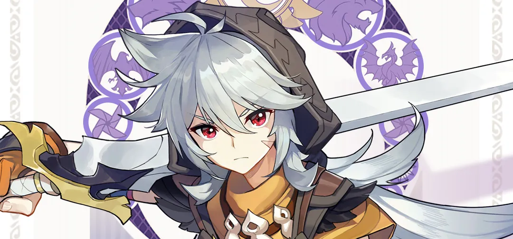
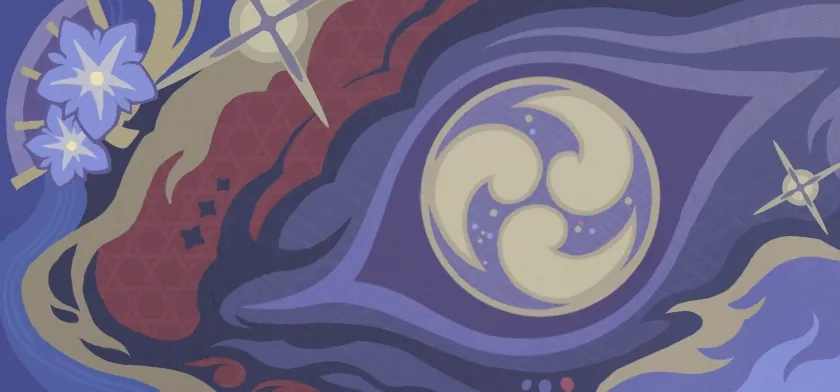
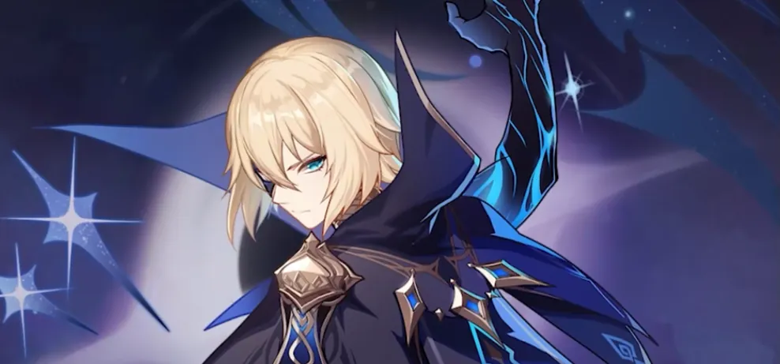
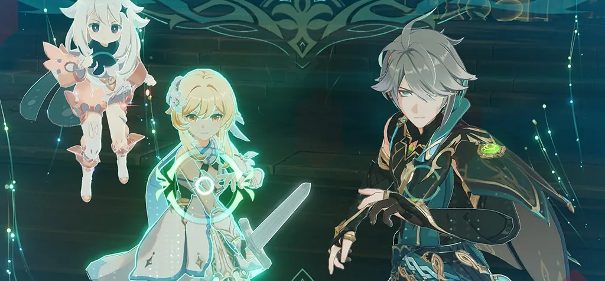

Genshin Impact · Light Novel
Genshin Impact
Hành Trình Của Nhà Lữ Hành
Light novel tiếng Việt chuyển thể cốt truyện Genshin Impact, theo chân Nhà Lữ Hành Lumine đi tìm người anh trai song sinh.

Mục lục
Mở Đầu
 Màn I Ma ThầnNgười Phương Xa Đuổi Theo GióNhiệm vụ Ma Thần — Mondstadt · 10 phần
Màn I Ma ThầnNgười Phương Xa Đuổi Theo GióNhiệm vụ Ma Thần — Mondstadt · 10 phần
Màn I Ma Thần
Người Phương Xa Đuổi Theo Gió
Nhiệm vụ Ma Thần — Mondstadt · 10 phần
 Màn I.1 Nhiệm vụ bắt buộcBa Ngôi Đền Của Tứ PhongNhiệm vụ bắt buộc để hoàn thành Màn I — Amber, Kaeya, Lisa · 4 phần
Màn I.1 Nhiệm vụ bắt buộcBa Ngôi Đền Của Tứ PhongNhiệm vụ bắt buộc để hoàn thành Màn I — Amber, Kaeya, Lisa · 4 phần
Màn I.1 Nhiệm vụ bắt buộc
Ba Ngôi Đền Của Tứ Phong
Nhiệm vụ bắt buộc để hoàn thành Màn I — Amber, Kaeya, Lisa · 4 phần
 Màn II Ma ThầnVì Một Ngày Mai Không Rơi LệNhiệm vụ Ma Thần — Mondstadt · 15 phần
Màn II Ma ThầnVì Một Ngày Mai Không Rơi LệNhiệm vụ Ma Thần — Mondstadt · 15 phần
Màn II Ma Thần
Vì Một Ngày Mai Không Rơi Lệ
Nhiệm vụ Ma Thần — Mondstadt · 15 phần
- Phần 1Mondstadt Chìm Trong Sự Ám Ảnh
- Phần 2Không Hẹn Mà Gặp
- Phần 3Tên Nhóc Màu Xanh Đó
- Phần 4Nghe Theo Hướng Gió
- Phần 5Kế Hoạch Của Venti
- Phần 6Kế Hoạch Mới Của Venti
- Phần 7Chạy Trốn
- Phần 8Cuộc Nói Chuyện Sau Hậu Trường
- Phần 9Đuổi Theo Bóng Người
- Phần 10Hiện Trạng Của Bảo Vật
- Phần 11Giọt Nước Mắt Bị Bỏ Quên
- Phần 12Giọt Nước Mắt Được Cất Giấu
- Phần 13Giọt Nước Mắt Bị Đánh Cắp
- Phần 14Giọt Nước Mắt Thuần Khiết
- Phần 15Gặp Gỡ Rồng
 Màn III Ma ThầnBài Ca Về Rồng Và Tự DoNhiệm vụ Ma Thần — Mondstadt · 8 phần
Màn III Ma ThầnBài Ca Về Rồng Và Tự DoNhiệm vụ Ma Thần — Mondstadt · 8 phần
Màn III Ma Thần
Bài Ca Về Rồng Và Tự Do
Nhiệm vụ Ma Thần — Mondstadt · 8 phần
Chương I · Liyue
 Màn I Ma ThầnPhù Thế Phù Sinh Thiên Nham GianNhiệm vụ Ma Thần — Liyue · 6 phần
Màn I Ma ThầnPhù Thế Phù Sinh Thiên Nham GianNhiệm vụ Ma Thần — Liyue · 6 phần
Màn I Ma Thần
Phù Thế Phù Sinh Thiên Nham Gian
Nhiệm vụ Ma Thần — Liyue · 6 phần
 Màn II Ma ThầnLời Tạm Biệt Thể Xác Vĩnh HằngNhiệm vụ Ma Thần — Liyue · 7 phần
Màn II Ma ThầnLời Tạm Biệt Thể Xác Vĩnh HằngNhiệm vụ Ma Thần — Liyue · 7 phần
Màn II Ma Thần
Lời Tạm Biệt Thể Xác Vĩnh Hằng
Nhiệm vụ Ma Thần — Liyue · 7 phần
Màn III Ma ThầnNgôi Sao Đang ĐếnNhiệm vụ Ma Thần — Liyue · 6 phần
Màn III Ma Thần
Ngôi Sao Đang Đến
Nhiệm vụ Ma Thần — Liyue · 6 phần

Màn III.1 Nhiệm vụ bắt buộcÝ Nghĩa Của LupicalNhiệm vụ nhân vật bắt buộc để mở Chương I · Màn IV — Chương Tiểu Lang - Màn I (Razor) · 4 phần
Màn III.1 Nhiệm vụ bắt buộc
Ý Nghĩa Của Lupical
Nhiệm vụ nhân vật bắt buộc để mở Chương I · Màn IV — Chương Tiểu Lang - Màn I (Razor) · 4 phần
 Màn III.2 Nhiệm vụ bắt buộcGió, Đôi Cánh Và Dũng KhíNhiệm vụ nhân vật bắt buộc để mở Chương I · Màn IV — Chương Tiểu Thố - Màn I (Amber) · 5 phần
Màn III.2 Nhiệm vụ bắt buộcGió, Đôi Cánh Và Dũng KhíNhiệm vụ nhân vật bắt buộc để mở Chương I · Màn IV — Chương Tiểu Thố - Màn I (Amber) · 5 phần
Màn III.2 Nhiệm vụ bắt buộc
Gió, Đôi Cánh Và Dũng Khí
Nhiệm vụ nhân vật bắt buộc để mở Chương I · Màn IV — Chương Tiểu Thố - Màn I (Amber) · 5 phần
Màn IV · Giới Thiệu Nhiệm vụ bắt buộcDainsleifNhiệm vụ mở đầu bắt buộc của Chương I · Màn IV — Người Giữ Cành · 1 phần
Màn IV · Giới Thiệu Nhiệm vụ bắt buộc
Dainsleif
Nhiệm vụ mở đầu bắt buộc của Chương I · Màn IV — Người Giữ Cành · 1 phần
 Màn IV Ma ThầnChúng Ta Ắt Sẽ Trùng PhùngNhiệm vụ Ma Thần — Mondstadt và Liyue · 4 phần
Màn IV Ma ThầnChúng Ta Ắt Sẽ Trùng PhùngNhiệm vụ Ma Thần — Mondstadt và Liyue · 4 phần
Màn IV Ma Thần
Chúng Ta Ắt Sẽ Trùng Phùng
Nhiệm vụ Ma Thần — Mondstadt và Liyue · 4 phần
Chương II · Inazuma
 Mở Đầu Ma ThầnGió Thu Vén Áo Hỏi Lá ĐỏNhiệm vụ Ma Thần — Liyue · 3 phần
Mở Đầu Ma ThầnGió Thu Vén Áo Hỏi Lá ĐỏNhiệm vụ Ma Thần — Liyue · 3 phần
Mở Đầu Ma Thần
Gió Thu Vén Áo Hỏi Lá Đỏ
Nhiệm vụ Ma Thần — Liyue · 3 phần
 Màn I Ma ThầnLôi Thần Uy Nghiêm, Địa Đàng Vĩnh HằngNhiệm vụ Ma Thần — Inazuma · 8 phần
Màn I Ma ThầnLôi Thần Uy Nghiêm, Địa Đàng Vĩnh HằngNhiệm vụ Ma Thần — Inazuma · 8 phần
Màn I Ma Thần
Lôi Thần Uy Nghiêm, Địa Đàng Vĩnh Hằng
Nhiệm vụ Ma Thần — Inazuma · 8 phần
Màn I.1 Nhiệm vụ bắt buộcCâu Chuyện Về Hạc Và Thỏ TrắngNhiệm vụ nhân vật bắt buộc để mở Chương II · Màn II — Chương Tuyết Hạc - Màn I (Kamisato Ayaka) · 5 phần
Màn I.1 Nhiệm vụ bắt buộc
Câu Chuyện Về Hạc Và Thỏ Trắng
Nhiệm vụ nhân vật bắt buộc để mở Chương II · Màn II — Chương Tuyết Hạc - Màn I (Kamisato Ayaka) · 5 phần
 Màn I.2 Nhiệm vụ bắt buộcVĩnh hằng như một giấc mơNhiệm vụ nhân vật bắt buộc để mở Chương II · Màn II — Chương Lưu Kim - Màn I (Yoimiya) · 4 phần
Màn I.2 Nhiệm vụ bắt buộcVĩnh hằng như một giấc mơNhiệm vụ nhân vật bắt buộc để mở Chương II · Màn II — Chương Lưu Kim - Màn I (Yoimiya) · 4 phần
Màn I.2 Nhiệm vụ bắt buộc
Vĩnh hằng như một giấc mơ
Nhiệm vụ nhân vật bắt buộc để mở Chương II · Màn II — Chương Lưu Kim - Màn I (Yoimiya) · 4 phần
 Màn II Ma ThầnTâm Vô Tạp Niệm, Bất Sinh Bất DiệtNhiệm vụ Ma Thần — Inazuma · 2 phần
Màn II Ma ThầnTâm Vô Tạp Niệm, Bất Sinh Bất DiệtNhiệm vụ Ma Thần — Inazuma · 2 phần
Màn II Ma Thần
Tâm Vô Tạp Niệm, Bất Sinh Bất Diệt
Nhiệm vụ Ma Thần — Inazuma · 2 phần

Màn III Ma ThầnThiên Thủ Bách Nhãn, Thiên Hạ Nhân GianNhiệm vụ Ma Thần — Inazuma · 9 phần
Màn III Ma Thần
Thiên Thủ Bách Nhãn, Thiên Hạ Nhân Gian
Nhiệm vụ Ma Thần — Inazuma · 9 phần
 Chương Đệm · Màn I Ma ThầnPhong Khởi Hạc QuyNhiệm vụ Ma Thần — Liyue · 4 phần
Chương Đệm · Màn I Ma ThầnPhong Khởi Hạc QuyNhiệm vụ Ma Thần — Liyue · 4 phần
Chương Đệm · Màn I Ma Thần
Phong Khởi Hạc Quy
Nhiệm vụ Ma Thần — Liyue · 4 phần

Màn IV Ma ThầnKhúc An Hồn Nơi Đáy VựcNhiệm vụ Ma Thần — Liyue · 4 phần
Màn IV Ma Thần
Khúc An Hồn Nơi Đáy Vực
Nhiệm vụ Ma Thần — Liyue · 4 phần
 Chương Đệm · Màn I.1 Nhiệm vụ bắt buộcHành Trình Bên Trong Vực Đá SâuNhiệm vụ thế giới bắt buộc để mở Chương Đệm · Màn II — Vực Đá Sâu, Liyue · 6 phần
Chương Đệm · Màn I.1 Nhiệm vụ bắt buộcHành Trình Bên Trong Vực Đá SâuNhiệm vụ thế giới bắt buộc để mở Chương Đệm · Màn II — Vực Đá Sâu, Liyue · 6 phần
Chương Đệm · Màn I.1 Nhiệm vụ bắt buộc
Hành Trình Bên Trong Vực Đá Sâu
Nhiệm vụ thế giới bắt buộc để mở Chương Đệm · Màn II — Vực Đá Sâu, Liyue · 6 phần
 Chương Đệm · Màn II Ma ThầnLộ Trình Nguy HiểmNhiệm vụ Ma Thần — Liyue · 5 phần
Chương Đệm · Màn II Ma ThầnLộ Trình Nguy HiểmNhiệm vụ Ma Thần — Liyue · 5 phần
Chương Đệm · Màn II Ma Thần
Lộ Trình Nguy Hiểm
Nhiệm vụ Ma Thần — Liyue · 5 phần
Chương III · Sumeru

Màn I Ma ThầnXuyên Qua Màn Sương Và Rừng RậmNhiệm vụ Ma Thần — Sumeru · 7 phần
Màn I Ma Thần
Xuyên Qua Màn Sương Và Rừng Rậm
Nhiệm vụ Ma Thần — Sumeru · 7 phần